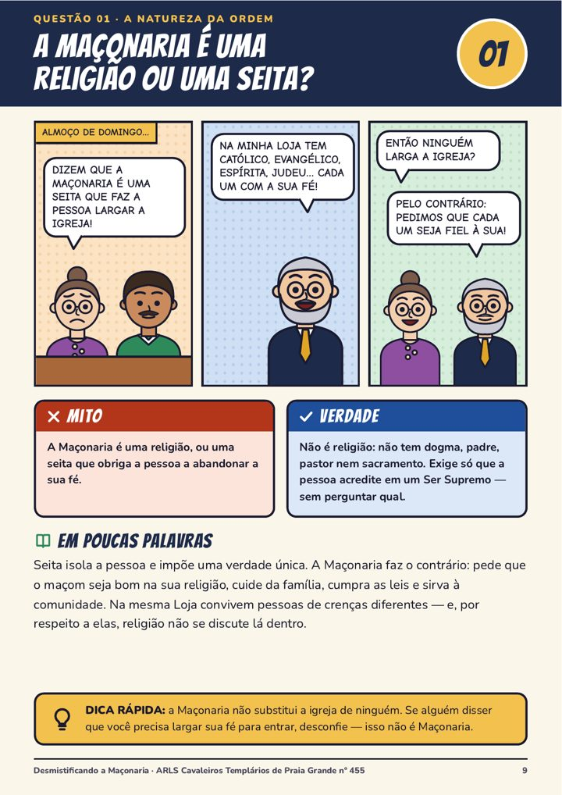
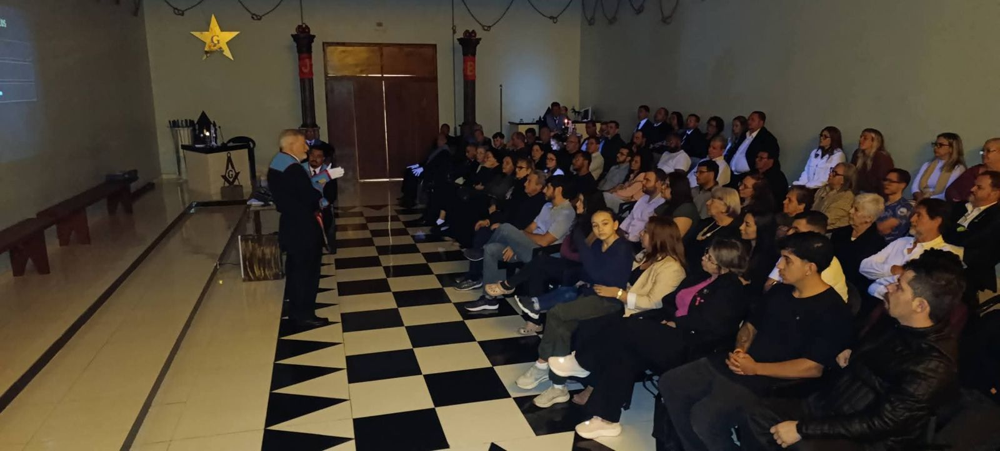
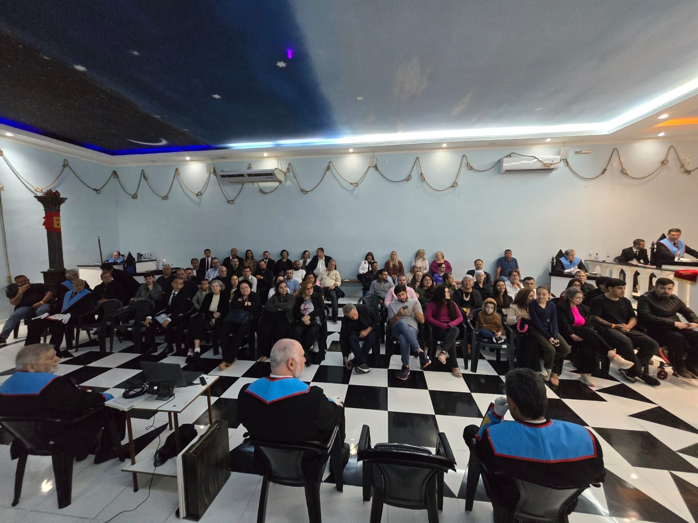
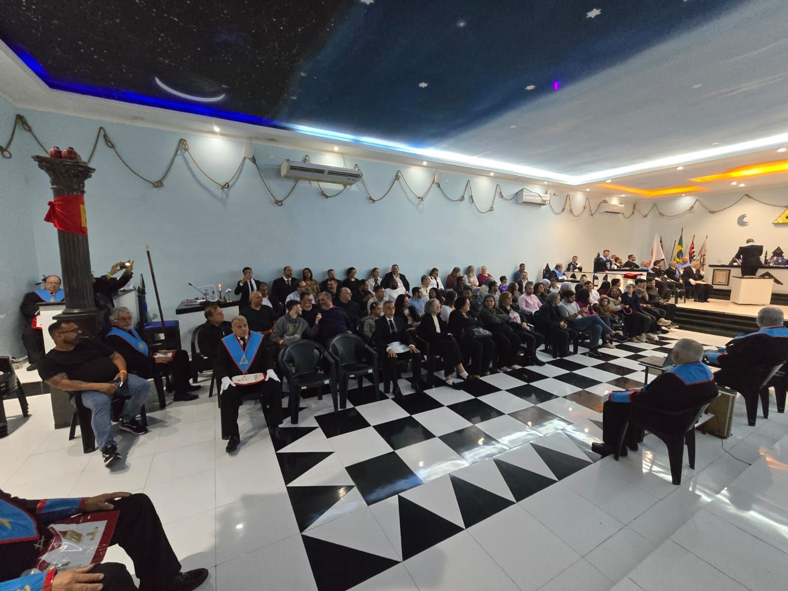
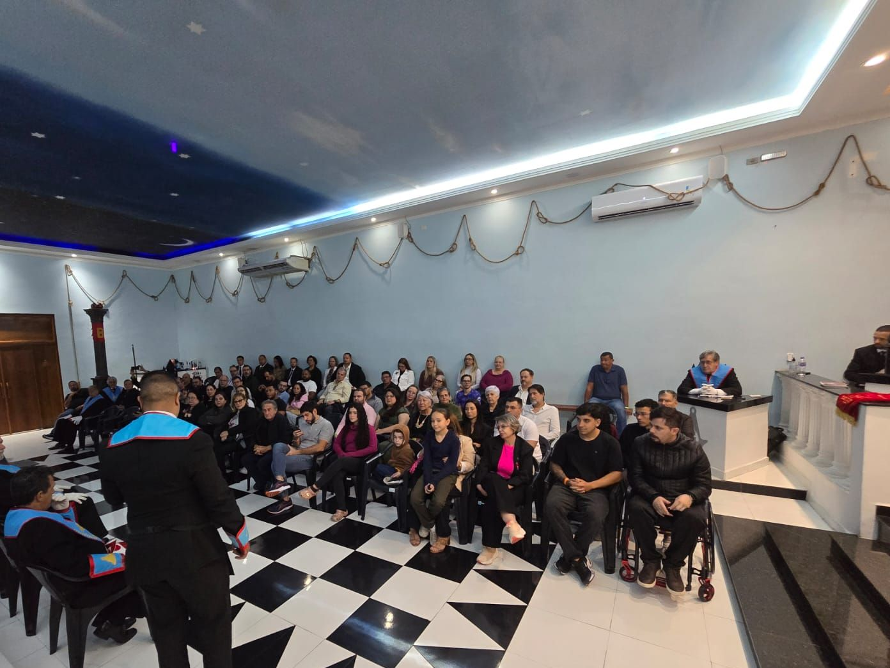
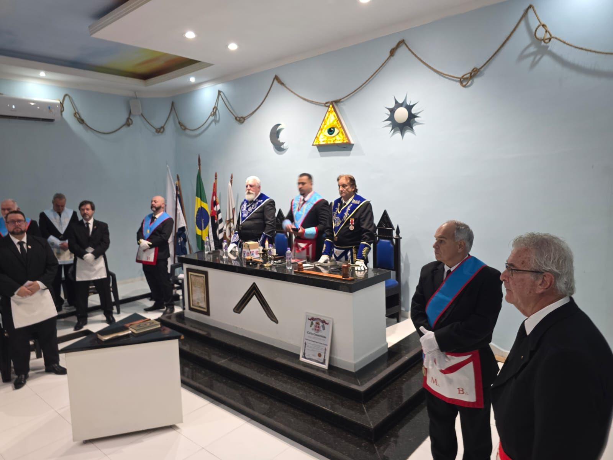

Desmistificando a Maçonaria Mitos e Verdades
É secreta? É religião? Quem pode entrar? As 22 perguntas mais comuns sobre a Ordem, respondidas em quadrinhos e linguagem simples. Gratuita, para ler, guardar e repassar.
O que você vai encontrar
Cinco personagens fazem as perguntas que todo mundo já ouviu por aí. Cada história em quadrinhos separa o mito da verdade e termina com uma dica rápida para levar para casa.
A natureza da Ordem
- 01 É religião ou seita?
- 02 É uma sociedade secreta?
- 03 Maçons cultuam o diabo? E o "olho que tudo vê"?
- 04 Ateus podem ser maçons?
- 05 Um católico pode ser maçom?
Poder e conspiração
- 06 A Maçonaria controla o mundo?
- 07 Maçonaria e Illuminati são a mesma coisa?
- 08 Maçons se ajudam em negócios e concursos?
- 09 Há símbolos maçônicos na nota de dólar?
- 10 Os maçons descendem dos Templários?
Entrada e vida maçônica
- 11 Como se entra? É preciso convite?
- 12 Precisa ser rico ou ter diploma?
- 13 Quanto custa ser maçom?
- 14 Quanto tempo a Maçonaria toma?
- 15 Ela afasta o homem da família?
- 16 O que acontece na iniciação?
- 17 Quem entra pode sair depois?
Símbolos, graus e história
- 18 Por que mulheres não entram?
- 19 O que é o Grau 33?
- 20 Existe aperto de mão secreto?
- 21 A caridade é de verdade?
- 22 Que brasileiros ilustres foram maçons?

Também na cartilha
- As 8 regras de ouro que separam a Maçonaria verdadeira dos boatos e dos golpistas.
- Os 10 mitos mais repetidos, com a resposta curta de cada um.
- Golpes em nome da Maçonaria: sinais de alerta e dicas de prevenção.
- A COMAB e o Grande Oriente Paulista: como a Maçonaria se organiza no Brasil.
Atenção: nossa Loja nunca pede dinheiro, dados ou documentos por mensagem. Não existe convite pela internet.
A Sessão Magna Pública
Em 26 de outubro de 2026, a A∴R∴L∴S∴ Cavaleiros Templários de Praia Grande nº 455 abriu as portas do templo para a Sessão Magna Pública Desmistificando a Maçonaria, com cerca de 100 pessoas presentes: aproximadamente 80 convidados não maçons, além dos Irmãos do quadro.
Como apoio ao tema, o Venerável Mestre Caio Renê Martins desenvolveu a cartilha Desmistificando a Maçonaria – Mitos e Verdades, entregue depois a todos os convidados. O objetivo é que o visitante tenha em casa respostas às dúvidas mais comuns sobre a Ordem.
~100
pessoas presentes
~80
convidados não maçons

Programação
Desmistificando a Maçonaria
Irmão Arnaldo Oliveira Dalmaso
Roda de conversa com os convidados
Irmãos Arnaldo Oliveira Dalmaso, Clodoaldo de Sousa Mafei e Mauro Simeoni
Venerável Mestre
Irmão Caio Renê Martins




Ficou com alguma dúvida?
Responderemos com discrição para conversar sobre a Maçonaria e sobre a nossa Loja.